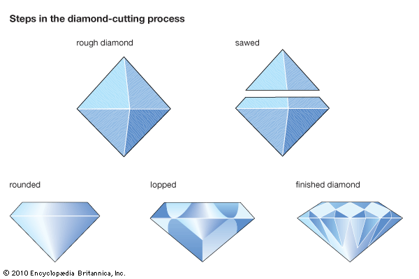

Diamond Finishing:
The last-step in the diamond finishing process is polishing. The diamond is clamped onto a revolving cast-iron lap (a horizontal, circular disk) that has been charged wit h diamond dust. The fine diamond dust acts as an abrasive to polish away small imperfections and make the surface of the stone perfectly smooth.
